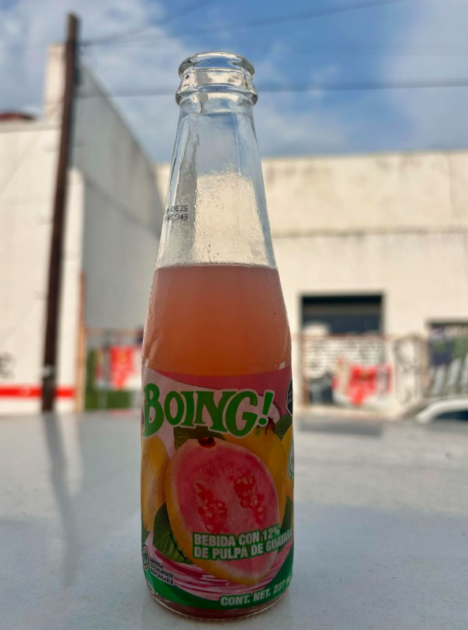

Bienvenido a la página oficial de Jugos Boing. Descubre el auténtico sabor de la fruta en cada uno de nuestros productos.
Jugos Boing se dedica a la elaboración de jugos y bebidas naturales de la más alta calidad, manteniendo los sabores tradicionales que nos han distinguido por generaciones.
Nuestra misión es ofrecer productos de calidad que conserven el auténtico sabor de la fruta, contribuyendo a una alimentación más saludable y deliciosa para toda la familia.
Fundada en 1957, Jugos Boing es una empresa 100% mexicana que ha crecido manteniendo su compromiso con la calidad y el sabor. Nuestros jugos son parte de la tradición y cultura mexicana.
|  | ||
Puedes contactarnos a través de nuestro correo electrónico: contacto@boing.com.mx o al teléfono: 55 1234 5678.
Ayúdanos a mejorar participando en nuestra encuesta de satisfacción:
Ayúdanos a mejorar dejando tu comentario u opinión: